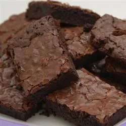

Brownies

Brownies are my favorite dessert and possibly my favorite food.
It is my contender for the treat that should define
America. It may not be as American as pie. But damn it, it
is just as good!
So next time you think about America, think about the fudgey,
gooey-ness of the perfect dessert, the brownie.
Ingredients
- 1 cup white sugar
- 1/2 cup butter, melted
- 2 large eggs
- 1/2 cup self-rising flour
- 1/3 cup unsweetened cocoa powder
- 1/4 teaspoon salt
- 1 teaspoon vanilla extract
- 1/2 cup chopped walnuts (optional)
Steps
- Preheat the oven to 350 degrees F (175 degrees C). Grease and flour an 8x8- or 9x9-inch baking pan.
- Beat together sugar and butter in a medium bowl. Add eggs and mix well. Combine flour, cocoa, and salt; stir into sugar mixture. Mix in vanilla, then stir in walnuts. Spread evenly into the prepared pan.
- Bake in the preheated oven until edges are firm, 25 to 30 minutes. Cool before cutting into squares.